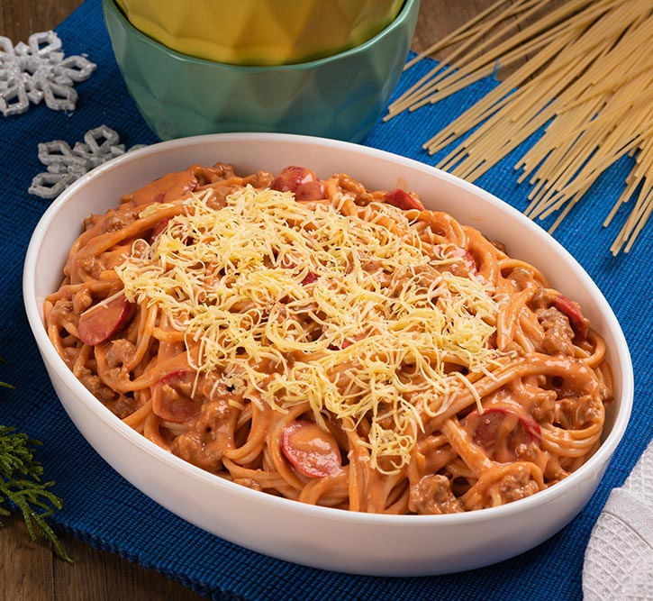

Pinoy Style Spaghetti

Description
Sweet Style Spaghetti
Ingredients
- 1-175 grams pack merienda size spaghetti
- 1 tbsp cooking oil
- 1 small onion, chopped finely
- 2 cloves garlic, minced
- 100 grams pork
- 11/2 cup water
- 2 pieces hotdog, sliced
- 1-115 grams tomato sauce
- 250 grams italian style spaghetti sauce
- 1/4 cup angel kremdensada/
- 1/4 tsp salt
- 1 pinch ground black pepper
Steps
- Heat oil on a pan. Add onion and garlic, saute until soft and aromatic.
- Add ground pork. Cook for 2 minutes or until slightly brown in color. Add water, simmer for 3 minutes.
- Add hotdog, tomato sauce and spaghetti sauce. Simmer for 10 minutes.
- Stir in Angel Kremdensada and quickly boil for a minute. Season pepper.
- Pour sauce over cooked spaghetti. Serve immediately.